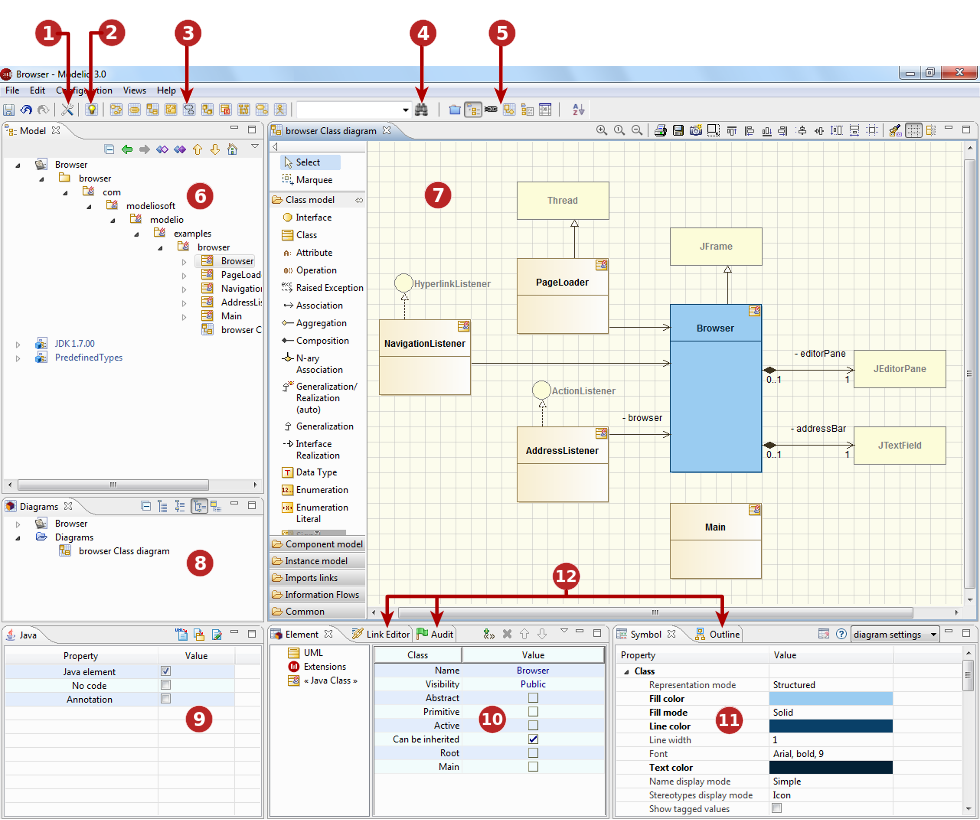

Key:
1. The Project configurator. This tool lets you configure your project’s information, work models, libraries, modules, audit and URLs.
2. The Diagram creation wizard. This tool lets you choose the type , name, description and owner of a diagram.
3. The Quick diagram creation. This is where you can directly create a diagram.
4. The Advanced search tool. This tool searches for NameSpace elements based on a partial or complete name.
5. The Perspectives buttons. This tool lets you switch between perspectives.
6. The Model view. This is where you can view, browse and edit your UML/BPMN model.
7. The Diagrams view. This is where you can view, browse and sort your diagrams.
8. The Diagram Edition view. This view is where you can view and edit your model in diagram form.
9. The modules tab. This view is where you can view and edit the options bought by modules (in this example Java Designer).
10. The Element view. This is where you can add or remove stereotypes or tagged values and view and edit the UML properties of an element selected in the navigation or edition views.
11. The Symbol view. This is where you can view and edit the graphic properties of your diagrams.
12. Other views. Script, Link Editor, Audit, Notes and constraints…
Note: All the views in the Modelio main window are dockable and can be positioned anywhere within the Modelio main window. Use the ‘Views’ menu of the Modelio menu bar to select the views you want to display.